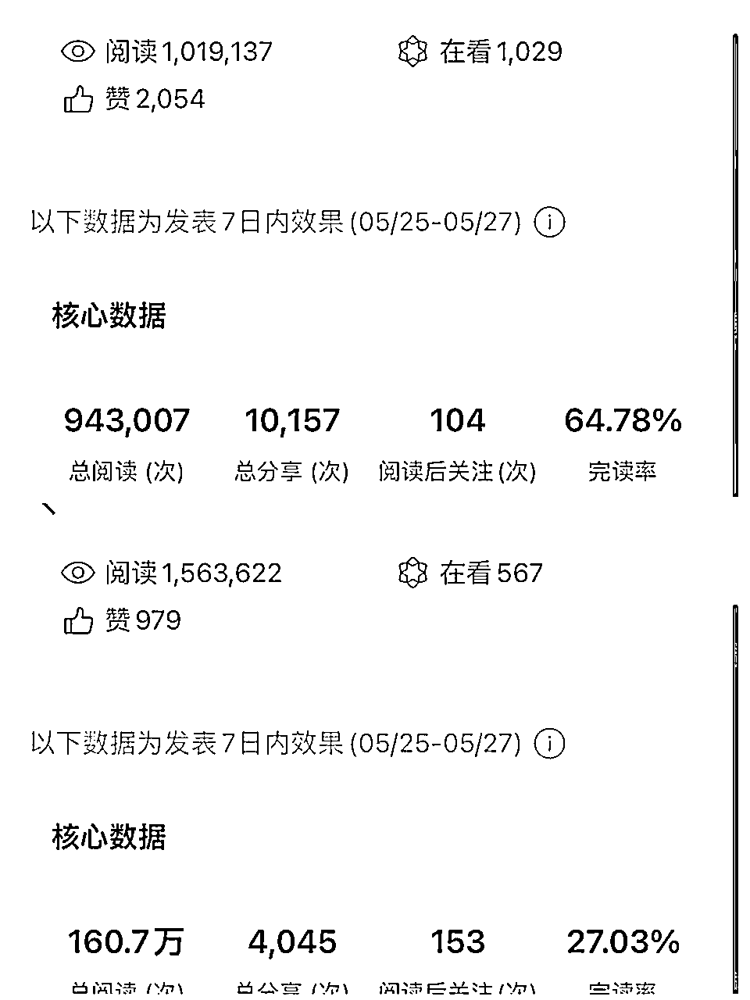
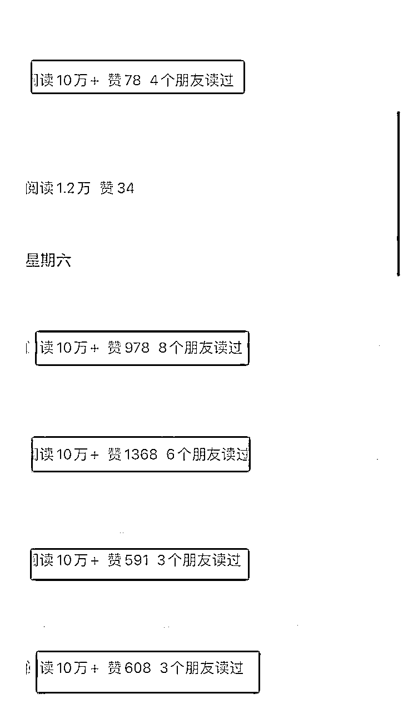

来源：https://k874t2qh8w.feishu.cn/docx/ZRlZdZPlEo4xbQxDwf4c8qqhnrb
大家好，我是辰风，又见面了。这次聊聊民生领域爆文的玩法，以及推荐做的几个方向。
特别感谢一来老师提供的账号对标经验，没有这个对标，可能我还停留在千元日收益以下的水平。

先说一下数据结果，这个号做了一个多月，有15篇十万加，其中几篇20万加，2篇百万加。
职场政策内这个赛道应该是从去年那会儿做的，当时一直放不大。感觉喜好上还是有一定的困难性，再加上做内容这块有一些思路没有摸清楚。
一直到 4 月 5 月，大概这个起号和进池的这个思路捋的差不多了。
首先是账号的选择上，我放弃掉了之前用过ai出文的几个账号，感觉ai出文的几个账号的内容阅读量都上不去，可能账号的权重被降低了，导致跑不出数据流量。
我选择了之前做过手搓出稿的账号，想做一下热点类的赛道。
从测试结果看，老号的进池速度和稳定性会比较好，但是新号也容易出低粉爆款，建议还是可以赛马机制去做账号，
刚开始发了几篇文章，数据一般般，但是看到有阅读500多的文章，进了一个小的推荐流量，我意识到这个账号应该有点搞头，所以开始尝试，想持续做热点方向的内容输出，当时也找了几个热门话题。
有些热点，属于擦边新闻或者短期时效性很强的热点，这块的热点我并没有去写，而是选的讨论度比较大的话题，以及有一些长期可讨论价值的内容。
譬如结合热点，聊主播，聊自媒体现状，结合猫一杯事件聊网红影响力，结合新闻热点聊结婚的问题，生孩子的问题。
后面看到房地产出台了很多相关政策，包括当时还有新能源车的事件，车圈的话题热度很高，然后就开始往楼市和车、银行这块走了一些话题。
就这样写了几篇10万加之后，准备把重心放在房地产，在房地产领域持续输出了大概有一周左右的时间。这时候已经有一定的阅读量了，比较稳定，但是阅读量始终上不去，最高的也就10万出头。
这时候换了一个对标的账号，聊的是关于民生领域的话题，关于养老金，体制内退休存款，这种比较有社会讨论性的民生议题。
关于比较推荐做的内容方向，在后面会给大家做一个展开，这一块呢，先给大家剖析一下我的一个心路历程，以及我账号定位和选题内容方向的调整。
当我账号的流量数据起来之后，基本都能够达到万以上的阅读量，这时候我拿的都是5万以上的爆款选题和10万以上的爆款选题，基本上发出去之后都有流量，有的跑量会有延迟，但是在一天左右的时间内，它也可以达到万以上的阅读量，甚至是10万加。

目前来看，它的整个推荐的时长以及在池的时间多久，还是存在一定的玄学，有的账号它就是像打不死的小强一样，可以维持很多时间，有的账号它就是昙花一现，可能火了一两篇文章之后，后面的文章就掉了池子。
目前唯有的解决办法：就是争取能薅流量的时候多薅，当你发现自己在跑量的时候，尽可能能够把文章拉满，一天多发几篇内容发到极致。
如果发现自己的内容开始掉流量了，那就可以减少你的发文篇数，做一个养老，然后再持续个半个月或一个月的时间，观望一下后面的数据，如果还是起不来，这个账号可以阶段性放弃，我们把重心转移到其他的账号上。
先看两个对标，公众号：小主看社会，老鹏谈职场，民生领域的。
我做的话题跟这两个账号的选题方向相类似，基本也是把这样的爆款选题直接拿过来，然后自己做原创。
在选择爆款对标的时候一定要做垂类赛道的细分，一个很大的命题是很难跑出流量的，做内容难度和压力也很大，但是如果是特别狭窄的方向，譬如养老金赛道，你也很难做出差异化内容，很容易重复度非常高。
职场内赛道：职场政策，公务员，国企，银行，体制内人情世故
厚黑学：高端认知，高维思考，富人思维等
三农领域：农业政策，农业相关
地理：世界地理，中国地理等
历史：某朝代历史
养生：偏国学，养胃，养生小技巧，健康减肥等等
行政单位，地铁站，高铁站，天气预报等，解决一个具体问题
我刷爆款的方式也非常简单，就是两个渠道，一个是订阅号消息，一个是看一看。
进入订阅号消息，直接往下滑，然后你会看到推荐的文章，通过他的文章的标题，你就大概知道他所写的内容方向，包括如果有十万加，他会直接在文章左下角显示出来，或者你直接进入文章，下滑到最底部可以看到他最近的阅读量。
有的是单篇进流量池，有的是账号在流量池里，那你选择进入他的主页，就可以浏览到他其他的文章，包括他发布的频次、时间段，你就可以判断出他最近的跑文章的爆款怎么样。
如果它是稳定更新，且持续有那种爆款，甚至有高达几万，甚至是10万加，这样的账号就值得拿过来作为对标。
然后把对标账号，爆款选题丢到你的小群或者是素材库，准备后续做内容。
一般的建议是你的对标至少要有10个到20个左右的账号，这样的对标才是比较有参考价值的。
有的账号可能存活时间比较长，生命周期比较长，有的账号可能生命周期比较短，你的对标账号也是要持续替换的，如果这个账号持续几天跑流量不行，或者持续一周，他已经流量下滑，那这样的账号没有太大的对标价值，我们应该把自己的重心放在能够跑出10万加甚至更高阅读的对标账号上。
第二是文章的定位和垂直度，有一些账号，它的定位不是很明确，乍一看它的流量很高，但是你有点摸不着他的门道，不知道他到底是做的什么样的定位，没有办法给他一个准确的标签，一会儿写房地产，一会儿写负债，一会儿写银行。
有的账号，个人风格非常强，有很强的个人元素，在我们没有办法模仿和学习仿照。
还有一种账号是，理论专业性很强，运用了大量的数据和佐证，这样的内容我们写起来的创作难度很大，也很耗费时间，这样的账号可以直接放弃。
要尽可能的减少时间成本，把时间都留在爆款选题上，而不应该是花费大量的时间去做文本的创作，很多时候选题本身比内容更有价值。
一个好的选题，一个好的赛道往往很容易跑出爆款，一个很优质的内容，如果是做的人多了，他也会没有流量。
垂类细分赛道，小众赛道很多，不一定非得要一个领域卷，找一个你专长的，你了解的领域，更能出成绩。
最后简单总结一下：
第 1 个，先看爆款号的 10 万加，然后把他的 10 万加的选题直接拿过来写。
他的大纲也可以直接用，你可以在他的选题下做原创或者是做二创。
做到1000字左右，两个广告位，然后发布。
第 2 个逻辑是，你要做降重，因为这个 10 万加的内容可能会被很多人对标，那么我们要做一些差异化。
不要做很简单的那种洗稿啊，或者说是搬运抄袭，或者是这里拿一点，那里拿一点拼拼凑凑，这种你原创度很难达标的，即便是你查重好像还可以，但是最终发出去肯定数据一般般。
大家应该都有写过论文，至少也有写过小作文的这种经历，其实我们的做内容的思路跟写论文的思路很像，但是没有写论文那么难。
无非就是多看几个参考文献，然后把他的观点论证论据杂揉到一起，最后把它梳理成一个体系化的内容，有事实观点，有论证支撑，然后有清晰的逻辑和条理，它能够串成一整篇完整的内容。
在写原创内容的时候，可以加入一些个人观点意志的表达，包括适当的一些情绪渲染，一些个人故事作为论证的支撑，这些都有助于你的内容的信息增量。
另外，你要搞一点高级的玩法，什么叫做高级的玩法？
有一些宏观的政策背景，我们是可以反复来写的，我们可以用不同的句式去写。
举个很简单的例子：（瞎写的，灵活套用）
随着我国经济社会的不断发展，我国即将步入老龄化社会，我国生育率逐渐降低，我国人口老龄化不断严重，我国要朝着两型化社会不断发展，我们要创建文明友好型和谐社会等等，类似于这样子的都是属于政策背景。
只要是他跟我们的主题相契合，或者是能够搭点勾的，那我们就可以把这个背景用不同的句式去写，结合不同的事件去写，然后我们把这个事件带进去，这个背景就写完了，这背景可以写到 200 到 300 字。
如果你不知道事实背景怎么去写，就可以搜论文文献，搜参考文章，看其他文章的故事背景，搜门户网站的内容写法，所有的文件甚至是短视频的内容，我们都可以拿过来用。
如果是针对于政策文件的解读，可以有两种形式，第一种是你把他的政策用自己的话说一遍。
第二种形式是你在那里面摘取一部分拿出来叙述，比方说可能政策文件写了有一两千字，我把他的重点摘要出来，我把它的关键性句子摘出来去写。
还有一种方式，是适当的进行内容的扩写，比如说它的一个主题是可能聊了一、二十字，我把它解读一下，用自己的话去阐述一遍。
另外在这个过程当中，可以通过讲故事的形式去充盈你的文章，或者是凑字数讲自己的故事，或者讲周围人的故事，或者讲其他文章的故事。
同主题下的论证过程，一个故事，它的框架可能是相类似的，但是我们可以换人称，换故事背景，或者是把它的这个叙述逻辑作为一些调整。
当我们用自己的话说出来，它就是一个新的故事，但是它的架构依然还是我们的对标文章所来。
通过加入个人故事，加入论证，这个也是增加信息增量的有效办法。
第三个，我们可以重点去做原创的部分，是关于你的观点抒发和对于未来的憧憬向往，等等一系列这种正义的美好的东西。
这块在文末的部分，正文已经结束了，但字数还不够，我可以加入个人观点的表达，同时展望美好未来。
比方说：我相信啊，随着时代的不断发展，我国政策一定会不断完善，社会会更加和谐美好，我们会朝着更好的生活前进。
总之就是往好的方向去写，去遐想。
然后适当的去发表你的观点，发表你的判断，这个一定要是切合新闻的，你不要去讲一些有的没的，或者讲不利于社会主流价值观的东西。
在别人写的文章当中，一定会有一些个人意志的观点表达。你可以去看多篇文章，然后把他们的观点记下来，他们大概聊的是一个什么样的东西，然后用自己的话，用自己的语言组织一遍，或者说你自己的观点，你自己的想法。
这块没必要抄袭，每个人对于一个事件，一个政策，一定有话说，你怎么想就怎么说，只要是符合社会主流价值观的就可以。这块内容你可以写个300字左右。
按照这样的一整套流程走下来，基本上你这篇文章的原创度不会有太大的问题。
那么最大的问题是什么？
最大的问题还是你的选题的问题，什么样的选题能够跑出 10 万加来？我怎么样能够尽可能通过原创提高创作效率？
两种形式，一种是手写，一种是语音输出。（我不用ai）
那比如我现在此时此刻，我就是在语音输出做的这场分享。
那我写内容是怎么写的？
直接对着一篇爆款文章，我看着,一个手机看一个手机写。
如果我有一个手机的话，那我就是，用微信打开的这个网页端，我先看他的这个政策描述部分，然后我再到订阅号助手里，直接语音输出，不需要任何的外部工具和第三方工具，直接在订阅号的助手的草稿编辑栏里面就可以开始写，写完之后改一下标点和表达，改一下错别字，调整一下排版，甚至你不需要排版,直接就发。
语音输出非常简单，一定可以做到的，只要你的普通话还算标准，你有一定的清晰度，你可以比较好的组织好你的语言。
如果即兴对你来说有一定的挑战，你可以列一个框架出来，然后把这个事件大概的描述一下，大概是一个什么样的事件，你列一个框架在那里，你对着框架去输出，对着原文去做一些输出，你前期可以多做刻意练习。
最后一定要有一个动作,就是你要对照着原文,去看你写出来的稿子,去做肉眼的比对和降重，这样子的话你这个原创度才能够达标。一篇文章看完也就几分钟时间，不需要多久，你可以感受到自己原创度怎么样。
我们做的是原创或者是二创，我们不是在洗稿，你洗稿你这个原创度肯定会有问题，你担惊受怕的，而且你不知道这个东西到底原创度高不高。
最重要的是，你洗来洗去，你已经不知道原创度高不高，你自己心里都不确定，你去易撰看，一查60分，或者70多分，但是发出去就跑不出数据，或者违规了。
我按照上述步骤执行，基本没有重复度低的，原创度都很高。
跟钱有关：房地产楼市（政策解读，涨价跌价），负债、经济下行，赌博网贷故事
现在大环境不好，经济下行，大家的负面情绪都很大，你要是去装逼聊自己有钱，可能会被人喷死，但是如果你是写争议性内容或者是写批判性内容，话题讨论度会非常高，会有一大堆人跟着你一起去吐槽某个政策，某个事实观点。
包括前段时间，房地产楼市采取了一系列政策，整个市场的波动，包括最近一些热议的时事热点话题，我们都可以去聊，还有比较常见的一些关于负债，跟钱挂钩的问题，最容易引发大众的讨论。
还有比如跟日常生活利益切身相关的，比如房价水电费上涨，地铁上涨，高铁涨价等等这些关乎民生的内容一定要重点关注，平时也要多看新闻，培养网感，积累素材，有敏锐的嗅觉和把握度。
之前也有人分享过关于赌博、网贷的一些对标账号，这样的内容它的人群精准度是非常高的，大家对于这样的内容也很关心，因为他们自己可能也有类似的遭遇，他们会在网上去搜索看这样的文章，通过这种方式寻求某种精神安慰，也可以说是精神鸦片。
我之前的有几篇爆款，就是关于聊劝大家不要结婚，聊房地产要涨价了，聊劝大家不要生孩子，然后跑到了10万加的阅读量。
跟网友的情绪对着来，你的文章阅读量会跑得很好。
因为我们所写的内容是涉及民生领域，跟群众的生活是息息相关的，很多人会有一些很负面的情绪，他可能会在评论区或者后台进行宣泄，我们不要太过在意他们所说的内容，因为我们只需要关注这个账号能不能带来流量，我们能不能赚到钱，剩下的我们都不需要太过放在心上。
所以不要让自己内耗，也不要太在乎他们所说的。
在写内容上，尽量的不要太过擦边或者特别标题党。
很多账号发布的内容未必是真实可靠的，即便他跑出很大的流量，这样的内容的真实性依然要存疑，我们最好能够找到政策文件或者是政府门户网站求证信息的真实性，以免造谣传谣。
有一些擦边的标题或者跑流量效果好的标题，但是它容易带来用户混淆或者带来不利的社会影响，在选择标题取标题这块也要把握好，不要太过分。
公众号为什么会一直调整推荐机制，为什么会打击ai，其实本质上还是希望有更多的优质内容创作者，希望平台可以出现更多差异化的内容，希望可以把平台的原创质量提升起来。
所以对抗平台一定会让你的账号受到影响，你很可能后面的账号跑量都跑不出去。
但是如果迎合平台做原创，高效率的产出文章，去寻找流量规律，你起号成功概率是很大的，而且这样的账号也能够做得更长久，随着你原创数量的叠加，你的内容质量的稳定，你的账号的权重拉高。
如果你这个账号长期稳在流量池子里，你就不需要担心后续的问题，只需要把这一个账号做好，也可以够你吃很长时间的红利。
那么以上呢，就是我的全部内容，希望对在做爆文或者想做爆文的朋友会带来一些启发。
感谢你看到这里。